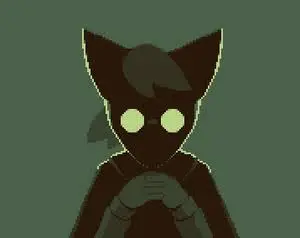

Биография

Родился в Ставрополе, переехал в Ессентуки, где учился в школе №10. Окончил с золотой медалью, сдал ЕГЭ на 265 баллов. Поступил учиться в СКФУ на направление "Программная инженерия".
Навыки
-
- Python (прекрасно)
- C# (неплохо)
- C++ (неплохо)
- GML (неплохо)
- Собираю компьютеры
- Умею собирать всякие электрические штуки
- Есть опыт в пайке
-
Учу следующие языки:
- Английский (прекрасно)
- Японский (начинающий, знаю кану, некоторые кандзи и базовую грамматику)